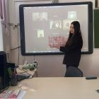

29.01.2022
"Лучший чтец произведений дагестанских авторов на родных языках"
29 января на базе МБОУ "СОШ 4" прошёл муниципальный этап республиканского конкурса "Лучший чтец произведений дагестанских авторов на родных языках". В связи со сложной эпидемиологической обстановкой конкурс прошёл в дистанционном формате. В чтении произведений дагестанских авторов на родных языках состязались 19 обучающихся 11-х классов из 10 общеобразовательных организаций города. Оценивало их способности компетентное жюри в составе Абрамовой Л. Н. , начальника МКУ "Управление образования"; Неджефова М. Р., учителя табасаранского языка и литературы Межгюльской СОШ Хивского района, корреспондента газеты "Зори Табасарана "; Абачараевой П. А. , заведующей д/с 23 "Лесная сказка"; Алиевой Н. А. , заместитель директора по УВР МБУ ДО "ДШЭП"; Казимагомедовой Ф. И. , кандидата филологических наук, заместителя декана факультета дагестанской филологии ДГПУ; Магомедовой А. Р. , заведующей д/с 15 "Незабудка"; Салиховой З. А. , директора МБУ ДО "СЮН "; Алышевой З. А. , преподавателя МБО ДО "ЦДТТ ". На конкурс дети должны были представить внепрограммные произведения дагестанских авторов. После оценивания участников по всем критериям путём подсчёта баллов были определены победитель - Исмаилов Магомед, ученик МБОУ "СОШ 4" (аварский язык ) и призёры - Курбанов М. А. , ученик МБОУ "Лицей 8" (даргинский язык ) и Демирбекова Ф. Р. , ученица МБОУ "СОШ 4" (табасаранский язык ). Пожелаем им удачи на республиканском этапе конкурса.
28.01.2022
В целях выявления лучших проектов в сфере охраны и восстановления водных ресурсов и поощрения инновационной проектной деятельности школьников, направленной на решение проблем питьевой воды, очистки загрязненных стоков, сохранение водного биоразнообразия городских и сельских водоемов, исследование корреляций водных, социальных, климатических и других факторов. Конкурс прошел в онлайн формате. Вела конкурс методист-педагог Мамаева Зурмут Магомедовна. Онлайн конференцию организовала педагог-организатор Багамаева Райсат Алиевна. В Конкурсе приняли участие 9 исследовательских работ из 8 образовательных организаций: МБОУ МБОУ «Средняя общеобразовательная школа №2»,«Средняя общеобразовательная школа №4», МБОУ «Средняя общеобразовательная школа №5», МБОУ «Средняя общеобразовательная школа №6»,МБОУ «Средняя общеобразовательная школа №13»,МБОУ «Каспийская гимназия»,МБОУ «Каспийский лицей №8»,МБОУ «КМШИ» . По результатам конкурса жюри подвели итоги следующим образом: I место – МБОУ «СОШ№4», Гаитбекова Амина –обуч-ся 10кл., руководитель Магомедова Асият Магомедовна-учитель географии. II место – МБОУ «Каспийская гимназия», Абдурашидов Сайгид - обуч-ся 9 кл., руководитель Сагитова Асият Магомедовна-зам.дир. по УВР. II место – МБОУ «КМШИ», Гаджиев Магомед - обуч-ся 10 кл.,руководитель Гаджиибрагимова Елена Гаджиомаровна - учитель биологии. III место – МБОУ «СОШ13», Избулатова Ильвира - обуч-ся 8 «2» кл., руководитель Бабаева Эльмира Мадатовна – учитель биологии. В завершении конкурса директор "СЮН" Зинаида Салихова отметила важность сохранения водных объектов и окружающей среды, что необходимо всем быть экологически грамотными и культурными и пожелала победителям удачи на республиканском этапе конкурса. Работа победителя будет представлена в республиканский оргкомитет.